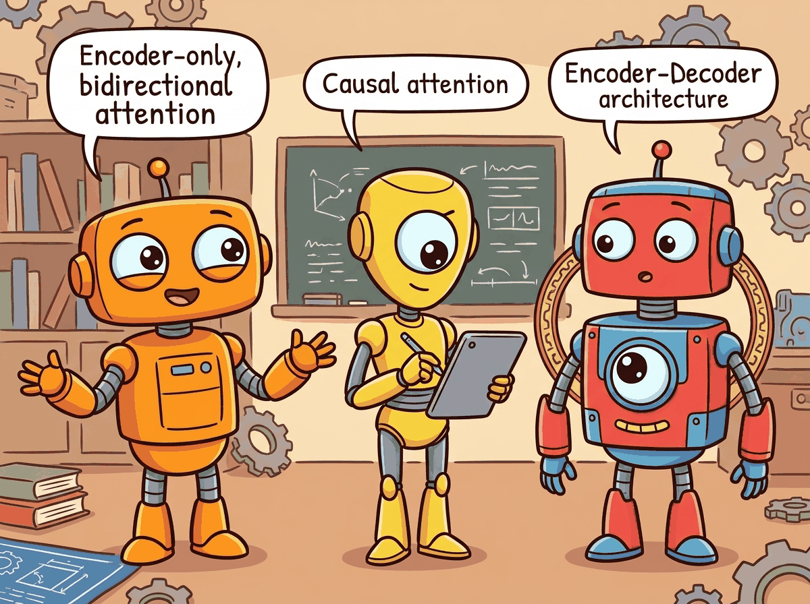

BERT reads both ways, GPT only looks left, and T5 just converts everything into a text-to-text problem. Family dinners are awkward.
Norm AI Agent
Prerequisites
This section builds on the complete Transformer architecture from Section 4.1 and the hands-on implementation in Section 4.2. Understanding self-attention, cross-attention, and causal masking from Section 3.3 is essential. The efficiency techniques discussed here connect directly to the inference optimization strategies in Chapter 9.

Building on the attention mechanism from Section 4.1, attention gives every token direct access to every other token (complete lookback) but at quadratic cost. SSMs compress the history into a fixed-size state (lossy compression) but at linear cost. The emerging trend in 2024/2025 is hybrid architectures that interleave SSM layers with attention layers (Jamba, Zamba, Samba), getting the best of both worlds: efficient processing for most of the context with selective exact retrieval where needed.
1. The Three Architectural Families
If someone asks you "which Transformer should I use?", your first question should be "what are you trying to do?" The original Transformer is an encoder-decoder model, but since 2017 three distinct families have emerged. Each family uses a different subset of the Transformer's components and targets different types of tasks. Understanding when to use which architecture is a fundamental skill in applied NLP.
1.1 Encoder-Only (BERT Family)
Encoder-only models use bidirectional attention: every token can attend to every other token, including those to its right. This makes them excellent for understanding tasks (classification, token-level labeling, sentence similarity) but unsuitable for generation, since there is no causal structure.
BERT (Devlin et al., 2018) is trained with masked language modeling (MLM): 15% of input tokens are randomly masked, and the model must predict them. This pre-training objective forces the model to build rich bidirectional representations. Key descendants include RoBERTa (larger data, longer training), DeBERTa (disentangled attention with relative position), and ELECTRA (replaced-token detection, which is more sample-efficient than MLM).
1.2 Decoder-Only (GPT Family)
Decoder-only models use causal (left-to-right) attention with the auto-regressive language modeling objective. They are the dominant architecture for modern LLMs because: (a) the training objective is simple, scalable, and naturally aligns with text generation; (b) they can be prompted to perform virtually any task (classification, translation, reasoning) through in-context learning; and (c) they are straightforward to scale.
GPT-2 (Radford et al., 2019) demonstrated that a sufficiently large language model develops emergent abilities. GPT-3 (Brown et al., 2020) showed that these abilities improve reliably with scale. Today, virtually all frontier LLMs (GPT-4, Claude, LLaMA, Gemini, Mistral) are decoder-only.
1.3 Encoder-Decoder (T5 Family)
Encoder-decoder models process an input sequence with bidirectional attention (encoder) and generate an output sequence with causal attention (decoder), using cross-attention to condition the decoder on the encoder's output. This is the original Transformer architecture and remains the best choice for tasks with a clear input/output structure where the input benefits from bidirectional processing: translation, summarization, and speech recognition (Whisper).
T5 (Raffel et al., 2020) reframed all NLP tasks as text-to-text problems, demonstrating that a single encoder-decoder model could handle classification, translation, summarization, and question answering with the same architecture, just different input/output text formats.
2. Positional Encoding Variants
Transformers have no built-in notion of order. Without positional information, the model sees a sequence as an unordered set: "the cat sat on the mat" and "the mat sat on the cat" would be indistinguishable. Every positional encoding scheme solves this problem differently, and the choice has real consequences for how well a model generalizes to sequence lengths it has not seen during training. Four main approaches have emerged since 2017.
2.0 Sinusoidal Encoding (Vaswani et al., 2017)
The original "Attention Is All You Need" paper used a fixed, non-learned encoding: each position is represented by a vector of sine and cosine values at geometrically spaced frequencies. For position $pos$ and dimension index $i$:
The low-frequency dimensions change slowly across positions (giving a coarse sense of where in the sequence we are) while high-frequency dimensions oscillate rapidly (giving fine-grained local position information). Together they form a unique "fingerprint" for every position.
Key advantage: because the encoding is a fixed mathematical function, it can be evaluated at any position, including positions beyond the training sequence length. A model trained on sequences up to length 512 can in principle receive a sinusoidal encoding for position 1000. Whether it attends to that position correctly is a separate empirical question, but the encoding itself does not break.
Key limitation: sinusoidal encoding represents absolute positions. The model must implicitly learn that position 5 and position 15 are 10 steps apart; that relative relationship is not directly injected. This becomes a problem for tasks that depend heavily on relative structure rather than absolute location.
2.0b Learned Positional Embeddings (BERT, GPT-2)
A simpler alternative: treat positions exactly like tokens. Create an embedding table
nn.Embedding(max_length, d_model) and look up a learned vector for each position
index. This is precisely what our Section 4.2 implementation does with self.pos_emb.
Key advantage: the model can learn whatever positional representation is most useful for the task. If the corpus has strong structural patterns (e.g., the first token is often a subject, the last token is often a period), the learned embeddings can capture those patterns directly. In practice, learned embeddings perform comparably to or slightly better than sinusoidal on standard benchmarks.
Key limitation: the embedding table has exactly max_length rows.
If the model encounters a sequence longer than max_length at inference time, it has
no embedding for those positions. BERT's maximum length of 512 tokens is a direct consequence of
this fixed table. Workarounds (interpolating learned embeddings, fine-tuning on longer sequences)
exist but add complexity.
Both sinusoidal and learned embeddings encode absolute position: they tell the model "this token is at position 7," but not "this token is 3 steps before that one." For many NLP tasks, relative position is what matters: whether a verb is close to its subject is more important than whether the subject is at position 7 or 700. The next two approaches address this directly.
2.1 Rotary Position Embedding (RoPE)
RoPE (Su et al., 2021) has become the dominant positional encoding in modern LLMs (used in LLaMA, Mistral, Qwen, Gemma). Instead of adding positional information to the input embeddings, RoPE applies a rotation to the query and key vectors in each attention head. The rotation angle depends on the position and the dimension index.
The key insight: after applying RoPE to queries and keys, their dot product depends only on their relative position, not their absolute positions. This is achieved by rotating pairs of dimensions by $pos \times \theta _{i}$: Code Fragment 4.3.1 below puts this into practice.
# Rotary Position Embedding (RoPE): rotate pairs of dimensions by
# position-dependent angles so relative distance is encoded in dot products.
def apply_rope(x, freqs_cos, freqs_sin):
"""Apply Rotary Position Embedding to queries or keys.
x: (B, n_heads, T, d_k)
freqs_cos, freqs_sin: (T, d_k//2) precomputed cos/sin of rotation angles
"""
# Split into pairs and rotate
x_r = x.float().reshape(*x.shape[:-1], -1, 2) # (..., d_k//2, 2)
x0, x1 = x_r[..., 0], x_r[..., 1]
cos = freqs_cos.unsqueeze(0).unsqueeze(0) # broadcast over B, n_heads
sin = freqs_sin.unsqueeze(0).unsqueeze(0)
# 2D rotation: [cos -sin; sin cos] @ [x0; x1]
out0 = x0 * cos - x1 * sin
out1 = x0 * sin + x1 * cos
out = torch.stack([out0, out1], dim=-1).flatten(-2)
return out.type_as(x)
RoPE advantages: (1) it naturally encodes relative positions, (2) it requires no additional parameters, (3) it can be extended to longer sequences through frequency scaling (NTK-aware scaling, YaRN), and (4) it has strong empirical performance.
RoPE is powerful but still fundamentally couples the model to a maximum trained sequence length. An alternative approach avoids learned or computed embeddings entirely, instead injecting position information directly into the attention computation itself.
2.2 ALiBi (Attention with Linear Biases)
ALiBi (Press et al., 2022) takes a minimalist approach: it adds a linear bias to the attention scores that penalizes distant positions. No positional encoding is added to the embeddings at all. For head $h$, a bias of $-m_{h} \cdot |i - j|$ is added to the attention score between positions $i$ and $j$, where $m_{h}$ is a head-specific slope (a fixed, non-learned geometric sequence: 1/2, 1/4, 1/8, …). The attention formula becomes:
The distance penalty grows linearly with separation. Each head has a different slope, so some heads are more "local" (high slope, sharp penalty) and others are more "global" (low slope, gentler penalty). The title of the original paper, "Train Short, Test Long," captures the key benefit: a model trained on sequences of length 1024 can extrapolate well to length 4096 because the bias function is just a linear ramp and never encounters an out-of-range index. ALiBi is used in BLOOM (176B) and several Falcon variants.
Key advantage: outstanding length extrapolation; extremely simple to implement (two lines of code); no additional parameters.
Key limitation: unlike RoPE, ALiBi biases are fixed and not learned, so the model cannot adapt its distance-sensitivity to the data. Empirically, RoPE tends to outperform ALiBi when the training and evaluation lengths are the same; ALiBi wins when lengths differ substantially.
2.3 Comparing the Four Approaches
The four positional encoding strategies occupy distinct points in a design space defined by whether position is absolute or relative, whether encodings are learned or fixed, and how well the approach generalizes to sequence lengths beyond training. The SVG diagram below shows each approach schematically, and the table beneath gives a quick reference.
| Method | Position type | Length generalization | Parameters | Key models | Compute cost |
|---|---|---|---|---|---|
| Sinusoidal | Absolute | Moderate (can evaluate beyond training length, but quality degrades) | None (fixed formula) | Original Transformer, some T5 variants | Negligible (precomputed) |
| Learned | Absolute | None (hard cap at max_length) | max_length × d_model | BERT, GPT-2, RoBERTa, ELECTRA | Negligible (one lookup per token) |
| RoPE | Relative (via rotation) | Good; extendable with NTK/YaRN scaling | None (computed from frequencies) | LLaMA 1-3, Mistral, Gemma, Qwen, Gemini, GPT-NeoX | Small (rotation per head per layer) |
| ALiBi | Relative (linear penalty) | Excellent (linear extrapolation) | None (fixed slopes) | BLOOM, some Falcon variants, MPT | Negligible (one addition per attention score) |
For a survey of which frontier models use which positional encoding in their production configurations, see Section 7.1. The KV cache interaction with RoPE (specifically, how cached keys and values retain their rotated coordinates across steps) is covered in Section 9.2.
3. Efficient Attention Mechanisms
Standard attention has $O(T^{2})$ time and memory complexity, where $T$ is the sequence length. For $T = 128\text{K}$ (a common context window in 2024+ models), the naive attention matrix would be $128\text{K} \times 128\text{K} = 16$ billion entries per head. This section surveys the main approaches to making attention tractable at long sequences.
3.1 Sparse Attention
Instead of attending to all positions, sparse attention restricts each token to attend to a carefully chosen subset of positions. The challenge is choosing which positions to attend to while preserving the model's ability to capture long-range dependencies.
- Local/Sliding Window Attention: Each token attends only to its neighbors within a fixed window of size $w$. Complexity becomes $O(T \times w)$. Used in Longformer and Mistral (window size 4096).
- Strided/Dilated Attention: In addition to local attention, some heads attend to every $k$-th position (dilated pattern), covering longer ranges with fewer computations. Used in BigBird and Sparse Transformer.
- Global Tokens: A small set of tokens (typically [CLS] or special sentinel tokens) attend to and are attended by all other tokens, serving as information hubs. This restores the ability to propagate information across the full sequence.
Mistral 7B uses a sliding window of 4096 tokens. Because information propagates through residual connections across layers, a model with $N$ layers and window size $w$ can theoretically propagate information across $N \times w$ positions. With 32 layers and w=4096, that is 131,072 positions of effective reach.
3.2 Linear Attention
Linear attention replaces the softmax kernel with a decomposable kernel function, allowing the attention computation to be rewritten in O(T) time:
The trick is to compute $\phi (K)^{T}V$ first (a $d \times d$ matrix, independent of T), then multiply by $\phi (Q)$. The feature map $\phi$ can be the identity (giving a simple outer-product formulation), an exponential, or a random feature approximation. Linear attention has seen renewed interest through architectures like RWKV and RetNet (discussed below).
3.3 FlashAttention
FlashAttention (Dao et al., 2022) is not an approximation; it computes exact standard attention but with dramatically better hardware utilization. The key insight is that the standard attention implementation is memory-bound: it writes the full T × T attention matrix to GPU global memory (HBM), reads it back for the softmax, writes it again, and reads it for the value multiplication. FlashAttention fuses these operations into a single kernel that keeps the attention matrix in fast on-chip SRAM, never materializing the full T × T matrix in HBM.
The result: 2 to 4x wall-clock speedup and dramatically reduced memory usage (from $O(T^{2})$ to $O(T)$ HBM). FlashAttention-2 further optimizes the kernel with better work partitioning across GPU thread blocks. FlashAttention-3 (2024) leverages Hopper GPU features (warp specialization, FP8 tensor cores) for additional gains. We cover the algorithm in detail in Section 4.4.
3.4 Multi-Query Attention (MQA) and Grouped-Query Attention (GQA)
During auto-regressive inference, the keys and values from all previous positions are cached (the "KV cache"), a technique we examine in detail in Section 9.2: Memory Optimization. With standard multi-head attention and many heads, this cache becomes enormous. Code Fragment 4.3.2 below puts this into practice.
- Multi-Query Attention (MQA) (Shazeer, 2019): All heads share a single set of keys and values. Only the queries differ per head. This reduces the KV cache by a factor of $h$ (the number of heads).
- Grouped-Query Attention (GQA) (Ainslie et al., 2023): A compromise where heads are divided into groups, and each group shares one set of keys and values. With $h=32$ heads and $g=8$ groups, the KV cache is reduced by 4x. Used in LLaMA 2, Mistral, and Gemma. For a survey of which production models use GQA, see Section 7.2.
# Grouped-Query Attention (GQA): multiple query heads share fewer KV heads.
# Reduces KV cache size while retaining most of multi-head attention quality.
class GroupedQueryAttention(nn.Module):
"""GQA: groups of query heads share KV heads."""
def __init__(self, d_model, n_heads, n_kv_heads):
super().__init__()
self.n_heads = n_heads
self.n_kv_heads = n_kv_heads
self.n_rep = n_heads // n_kv_heads # how many Q heads per KV head
self.d_k = d_model // n_heads
self.W_q = nn.Linear(d_model, n_heads * self.d_k, bias=False)
self.W_k = nn.Linear(d_model, n_kv_heads * self.d_k, bias=False)
self.W_v = nn.Linear(d_model, n_kv_heads * self.d_k, bias=False)
self.W_o = nn.Linear(d_model, d_model, bias=False)
# Forward pass: define computation graph
def forward(self, x, mask=None):
B, T, _ = x.shape
q = self.W_q(x).view(B, T, self.n_heads, self.d_k).transpose(1, 2)
k = self.W_k(x).view(B, T, self.n_kv_heads, self.d_k).transpose(1, 2)
v = self.W_v(x).view(B, T, self.n_kv_heads, self.d_k).transpose(1, 2)
# Repeat KV heads to match the number of query heads
# (B, n_kv_heads, T, d_k) -> (B, n_heads, T, d_k)
k = k.repeat_interleave(self.n_rep, dim=1)
v = v.repeat_interleave(self.n_rep, dim=1)
scores = (q @ k.transpose(-2, -1)) / (self.d_k ** 0.5)
if mask is not None:
# Mask future positions with -inf so softmax ignores them
scores = scores.masked_fill(mask == 0, float('-inf'))
# Convert scores to attention weights (probabilities summing to 1)
attn = torch.softmax(scores, dim=-1)
out = (attn @ v).transpose(1, 2).contiguous().view(B, T, -1)
return self.W_o(out)
Who: An ML team at an insurance company building an automated claims classification system.
Situation: The team needed to classify insurance claims into 47 categories based on the claim text. They initially used a decoder-only LLM (Llama 2 7B) with few-shot prompting, achieving 82% accuracy.
Problem: Processing 50,000 claims per day with a 7B decoder-only model required four A100 GPUs and took 18 hours. Inference cost was $2,400/month, and latency (3.2 seconds per claim) was too high for the real-time workflow the operations team wanted.
Dilemma: They could optimize the LLM inference (quantization, batching), switch to a smaller decoder-only model (sacrificing accuracy), or reconsider the architecture choice entirely.
Decision: Since classification is a bidirectional understanding task (not generation), they switched to a fine-tuned encoder-only model: DeBERTa-v3-large (304M parameters). Encoder-only models process the full input in a single forward pass with bidirectional attention, which is both faster and more natural for classification.
How: They fine-tuned DeBERTa on 10,000 labeled claims for 3 epochs using a single A10 GPU. Training took 45 minutes. They added a classification head (a linear layer) on top of the [CLS] token representation.
Result: Accuracy improved to 89% (bidirectional context helped). Inference ran on a single T4 GPU at 150 claims per second (vs. 0.3/second with Llama). Monthly compute cost dropped to $180. The entire daily workload completed in under 6 minutes.
Lesson: Architecture choice should match the task. Decoder-only models excel at generation; encoder-only models are faster, cheaper, and often more accurate for classification and retrieval tasks.
All the attention variants we have seen so far modify how attention scores are computed or how many heads share parameters. But they all share a common limitation: softmax attention always assigns some weight to every position, even irrelevant ones. The next approach tackles this "attention noise" problem directly.
3.5 Differential Attention (DIFF Transformer)
A more recent innovation in attention design is Differential Attention, introduced by Ye et al. (2024) in the DIFF Transformer paper. The core idea is that standard softmax attention allocates non-trivial weight to irrelevant context tokens (a phenomenon sometimes called "attention noise"). Even with a clear focus token, the long tail of softmax probabilities still assigns small but non-zero attention to unrelated positions, diluting the signal and contributing to hallucination.
Differential Attention addresses this by computing attention as the difference of two separate softmax attention maps. Each attention head is split into two sub-heads that compute independent attention distributions over the same keys, and the final attention weights are the element-wise subtraction of one from the other. Positions that receive similar attention from both sub-heads cancel out (analogous to noise cancellation), while positions that one sub-head strongly attends to but the other does not are amplified. The result is a sparser, more focused attention pattern that better distinguishes signal from noise. Code Fragment 4.3.3 below puts this into practice.
# Simplified Differential Attention (conceptual)
def diff_attention(Q1, K1, Q2, K2, V):
"""Two sub-attention maps; subtract to cancel noise."""
attn_1 = F.softmax(Q1 @ K1.T / math.sqrt(d_k), dim=-1)
attn_2 = F.softmax(Q2 @ K2.T / math.sqrt(d_k), dim=-1)
# Noise cancellation: positions attended equally by both cancel out
diff_weights = attn_1 - attn_2
return diff_weights @ V
Empirically, DIFF Transformers show improved performance on long-context tasks, key-value retrieval, and hallucination benchmarks, with particular gains on tasks requiring precise information extraction from noisy contexts. The approach adds minimal overhead (two sets of query/key projections per head instead of one) and is compatible with FlashAttention and GQA. Microsoft has explored integrating Differential Attention into production models, and the technique represents a promising direction for making attention more robust without fundamentally changing the Transformer architecture.
3.6 Multi-Head Attention: Why Multiple Heads?
We established the mechanics of multi-head attention in Section 4.1 and implemented it in Section 4.2. Now let us dig into the why: what does having multiple heads actually buy us?
The short answer is that different heads learn to attend to fundamentally different kinds of
relationships, simultaneously. A single attention head produces one attention distribution over
the sequence for each query position: it is forced to aggregate all of its relational reasoning
into a single scalar weight per (query, key) pair. Multi-head attention runs
n_heads independent attention computations in parallel, each in a lower-dimensional
subspace, and then concatenates the results. This lets the model represent multiple relational
modes at once.
Empirical evidence for this comes from interpretability work. Clark et al. (2019) analyzed BERT's attention patterns and found striking specialization across heads:
- Syntactic heads: some heads consistently attend from a verb to its direct object, or from a noun to its modifying adjectives, regardless of their absolute positions in the sentence.
- Coreference heads: certain heads track pronoun-antecedent relationships, attending from "she" back to the named entity it refers to, potentially dozens of tokens away.
- Local context heads: some heads attend almost exclusively to immediately adjacent tokens (a sliding-window pattern), providing a local smoothing effect.
- Global anchor heads: other heads attend heavily to special tokens like
[CLS]or sentence-boundary markers, effectively routing global context signals. - Positional heads: a subset of heads attend to fixed relative offsets (always one token back, always two tokens forward), encoding structured local order information.
This specialization is an emergent property: no training objective explicitly requires a head to learn coreference. It arises because tracking coreference is useful for next-token prediction, and the architecture provides enough capacity (enough separate heads) for the model to allocate a head to this purpose without sacrificing others. Single-head attention cannot do this: with only one attention distribution, the model is forced to trade off between all these relational signals at every position.
For a discussion of how Grouped-Query Attention (GQA) reduces the number of key-value heads while retaining most of this multi-head representational power, see Section 9.2.
3.7 Pre-Norm vs. Post-Norm Layer Normalization
Layer normalization is present in every Transformer block, but where you apply it changes both training stability and model quality in ways that matter at scale. Two placement strategies have competed since 2018, and a simplified normalization variant has emerged as a third option.
3.7.1 Post-Norm (Original Vaswani 2017)
The original "Attention Is All You Need" paper placed LayerNorm after the residual add:
The intuition is clean: normalize the output of each sublayer before passing it forward. However, this placement creates a training instability problem at scale. During backpropagation, gradients flowing back to early layers must pass through the LayerNorm operations at every block. The norm statistics depend on the current activations and can produce high-variance gradients in early training before the model has settled. This forced practitioners to use very careful learning-rate warmup schedules (often thousands of steps at very low learning rate) to stabilize Post-LN training.
3.7.2 Pre-Norm (GPT-2 onward, all modern LLMs)
Pre-Norm applies LayerNorm before the sublayer:
The key difference: the residual path x + is not passed through LayerNorm.
Gradients flowing back through the residual connection reach all earlier layers directly, without
being modified by any normalization step. This produces much more stable gradient magnitudes
throughout training and essentially eliminates the need for warmup warmup, or at least reduces
the sensitivity to its length. Virtually every LLM trained since GPT-2 (Radford et al., 2019)
uses Pre-LN. In our Section 4.2 implementation, the two lines
x = x + self.attn(self.ln1(x)) and x = x + self.ffn(self.ln2(x))
are both Pre-LN.
3.7.3 RMSNorm (Zhang & Sennrich, 2019)
Standard LayerNorm normalizes by subtracting the mean and dividing by the standard deviation, then scales and shifts:
RMSNorm simplifies this by removing the mean-centering step entirely and using only the root-mean-square for scaling:
The motivation: the mean-centering in standard LayerNorm re-centers activations at zero, but empirically the centering provides little or no quality benefit while adding computation. RMSNorm drops both the mean subtraction and the shift parameter $\beta$, reducing the operation to a single division and element-wise scale. Zhang and Sennrich (2019) showed that RMSNorm matches LayerNorm quality with roughly 7-12% less computation on the normalization step.
Modern LLMs have adopted RMSNorm widely. LLaMA 1 through 3, Mistral, Gemma, and Qwen all use RMSNorm in the Pre-LN position. The combination of Pre-LN placement and RMSNorm is now the de facto standard for frontier decoder-only models.
Unless you have a specific reason to deviate, use Pre-LN with RMSNorm.
It is the most stable configuration for training deep Transformers, it requires minimal
warmup, and it closely matches the configuration of every major open-source LLM. In PyTorch:
torch.nn.RMSNorm(d_model) is available from PyTorch 2.4+ as a built-in module.
For older versions, a single-line implementation is:
x / x.pow(2).mean(-1, keepdim=True).add(1e-8).sqrt() * weight.
4. Beyond Attention: State Space Models
State Space Models reveal that sequence modeling is fundamentally a problem of dynamical systems theory, a branch of mathematics shared by control engineering, signal processing, and physics. The continuous-time state equation dx/dt = Ax + Bu is the same formalism used to model electrical circuits, mechanical oscillators, and chemical reaction kinetics. The key insight from S4 and Mamba is that by carefully initializing the state matrix A using results from approximation theory (specifically, the HiPPO framework, which optimally compresses a continuous input history into a finite-dimensional state), you can build sequence models that rival Transformers on long-range tasks while maintaining linear time complexity. This cross-pollination from control theory to language modeling illustrates a broader pattern in science: mathematical structures that solve one problem often transfer surprisingly well to seemingly unrelated domains.
State Space Models borrow their mathematical framework from control theory, a field originally developed to stabilize rockets and autopilots. The idea that the same equations used to keep a spacecraft on course could also help a language model remember context across long documents is a beautifully unexpected connection.
State Space Models (SSMs) represent a fundamentally different approach to sequence modeling. Instead of computing pairwise attention between all tokens, SSMs process sequences through a linear recurrence with continuous-time dynamics. The key innovation is that this recurrence can be computed in O(T log T) time during training (using a parallel scan or convolution) while maintaining O(1) per-step cost during inference.
4.1 The S4 Foundation
S4 (Gu et al., 2022) models the mapping from input $u(t)$ to output $y(t)$ through a linear state-space equation:
After discretization with step size $\Delta$, this becomes a linear recurrence: $h_{t} = \bar{A}h_{t-1} + \bar{B}u_{t}$. The discrete recurrence can also be unrolled as a convolution (over the full sequence), enabling parallel training. S4's breakthrough was showing how to parameterize the matrix $A$ (using the HiPPO initialization) to capture long-range dependencies that RNNs struggle with.
4.2 Mamba: Selective State Spaces
Mamba (Gu and Dao, 2023) introduced selective state spaces, where the parameters B, C, and $\Delta$ are input-dependent (functions of the current token). This breaks the linear time-invariance that allows convolution-based training, but the authors developed a hardware-aware parallel scan algorithm that achieves efficient training on GPUs.
Mamba's advantages over Transformers:
- Linear time complexity in sequence length (vs. quadratic for attention)
- Constant memory during inference: no KV cache that grows with context
- Fast inference: each new token requires only a fixed-size state update
- Strong performance on tasks requiring long-range reasoning (up to millions of tokens)
Mamba's disadvantages:
- Cannot perform arbitrary lookback into the full context the way attention can; information must be compressed into the finite-dimensional state
- Harder to parallelize across the sequence dimension during training compared to attention
- Fewer mature optimization tools (no equivalent of FlashAttention yet for all SSM variants)
Who: A research engineer at a legal AI startup exploring architectures for analyzing contracts up to 100,000 tokens long.
Situation: The startup's existing Transformer-based system truncated contracts to 8,192 tokens (the model's context limit), missing critical clauses in longer documents. They needed a model that could process full contracts without truncation.
Problem: Extending the Transformer's context to 128K tokens with standard attention would require quadratic memory, making it infeasible on their A100 GPUs. Even with FlashAttention, inference time scaled linearly with the square of the context length.
Dilemma: They evaluated three options: a Transformer with FlashAttention-2 and a 128K context window (expensive but proven), a pure Mamba model (linear scaling but less mature), or a hybrid architecture (Jamba-style, interleaving attention and SSM layers).
Decision: They chose the hybrid approach, using a Jamba-style architecture with one attention layer for every seven SSM layers. The attention layers provided exact retrieval for cross-referencing specific clauses, while the SSM layers efficiently processed the bulk of the document.
How: They fine-tuned the hybrid model on 5,000 annotated legal contracts, using the SSM layers for general comprehension and relying on the sparse attention layers to handle tasks requiring precise token-level lookback (e.g., "does Section 13.3 contradict Section 4.1?").
Result: The hybrid model processed 100K-token contracts with 60% less GPU memory than a full-attention Transformer. Accuracy on clause extraction matched the Transformer baseline, while cross-reference detection (requiring long-range lookback) scored 91% vs. 78% for a pure Mamba model.
Lesson: Hybrid architectures that combine SSM efficiency with selective attention layers offer the best tradeoff for tasks requiring both long-context processing and precise information retrieval.
The success of hybrid architectures raises a natural question: are SSMs and attention really so different? Recent theoretical work suggests they may be closer than anyone expected.
4.3 Mamba-2 and the Connection to Attention
Mamba-2 (Dao and Gu, 2024) revealed a deep connection between SSMs and attention. The structured state space duality (SSD) framework shows that selective SSMs are equivalent to a form of structured masked attention, where the mask has a specific semiseparable structure. This unification opens the door to transferring optimization techniques between the two paradigms.
The Mamba-2 duality between SSMs and attention reveals something profound: all sequence models face the same fundamental tradeoff between memory and computation, just at different points on the Pareto frontier. Attention stores the entire history explicitly (the KV cache) and computes interactions on demand, like an open-book exam. SSMs compress history into a fixed-size state and must reconstruct what they need, like a closed-book exam where you memorized the material. This tradeoff echoes a classic result in computational complexity: the space-time tradeoff, where any computation can trade memory for processing time and vice versa. The convergence of SSMs and attention via the SSD framework suggests there may be a unified mathematical structure underlying all sequence models, just as statistical mechanics unifies different descriptions of the same physical system (microcanonical, canonical, grand canonical) as perspectives on the same underlying reality.
5. RWKV: Linear Attention as an RNN
RWKV (Peng et al., 2023) combines the training parallelism of Transformers with the inference efficiency of RNNs. It uses a variant of linear attention with time-dependent decay, formulated so that it can be computed either as a parallel attention-like operation (for training) or as a sequential RNN (for inference).
The core idea: replace softmax attention with a weighted sum using exponentially decaying weights:
Here $w$ is a learned decay factor (how quickly the model "forgets" past tokens) and $u$ is a bonus for the current token. This can be computed in O(T) during both training and inference. RWKV-6 and later versions add more sophisticated mechanisms (data-dependent linear interpolation, multi-scale decay) while maintaining linear complexity.
6. Mixture-of-Experts (MoE)
Mixture-of-Experts is an orthogonal scaling strategy: instead of making every layer wider, you create multiple "expert" sub-networks and route each token to only a few of them. This dramatically increases the total parameter count (and thus model capacity) while keeping the computation per token roughly constant.
6.1 Architecture
In a typical MoE Transformer, the FFN in each block is replaced by a set of $E$ expert FFNs plus a router (gating network). For each token, the router selects the top-$k$ experts (typically k=1 or k=2), and the token is processed only by those selected experts. The output is a weighted combination of the expert outputs. Code Fragment 4.3.4 below puts this into practice.
# Mixture-of-Experts FFN: a learned router selects top-k experts per token.
# Only the selected experts run, keeping compute constant as total params grow.
class MoELayer(nn.Module):
"""Mixture-of-Experts feed-forward layer."""
def __init__(self, d_model, d_ff, n_experts, top_k=2):
super().__init__()
self.n_experts = n_experts
self.top_k = top_k
# Router: maps d_model -> n_experts (logits for each expert)
self.router = nn.Linear(d_model, n_experts, bias=False)
# Expert FFNs
self.experts = nn.ModuleList([
nn.Sequential(
nn.Linear(d_model, d_ff, bias=False),
nn.SiLU(),
nn.Linear(d_ff, d_model, bias=False),
)
for _ in range(n_experts)
])
def forward(self, x):
B, T, C = x.shape
x_flat = x.view(-1, C) # (B*T, C)
# Compute routing weights
router_logits = self.router(x_flat) # (B*T, n_experts)
weights, indices = torch.topk(router_logits, self.top_k, dim=-1)
weights = torch.softmax(weights, dim=-1) # normalize top-k
# Dispatch tokens to experts and combine results
output = torch.zeros_like(x_flat)
for k in range(self.top_k):
expert_idx = indices[:, k] # (B*T,)
weight = weights[:, k].unsqueeze(-1) # (B*T, 1)
for e in range(self.n_experts):
mask = (expert_idx == e)
if mask.any():
expert_input = x_flat[mask]
expert_output = self.experts[e](expert_input)
output[mask] += weight[mask] * expert_output
return output.view(B, T, C)
A naive router tends to collapse: it learns to send all tokens to the same few experts, leaving most experts unused. To prevent this, MoE models add an auxiliary load-balancing loss that penalizes imbalanced expert utilization. The balancing loss encourages the router to distribute tokens roughly equally across experts. Mixtral, Switch Transformer, and GShard all use variants of this technique.
6.2 Notable MoE Models
| Model | Total Params | Active Params | Experts | Top-k |
|---|---|---|---|---|
| Switch Transformer | 1.6T | ~100B | 128 | 1 |
| Mixtral 8x7B | 46.7B | 12.9B | 8 | 2 |
| Mixtral 8x22B | 176B | 39B | 8 | 2 |
| DeepSeek-V2 | 236B | 21B | 160 | 6 |
| Qwen2-MoE | 57B | 14.3B | 64 | 8 (shared + routed) |
| DeepSeek-V3 | 671B | 37B | 256 | 8 |
| Llama 4 Maverick | 400B | 17B | 128 | Top-1 routed |
| Llama 4 Scout | 109B | 17B | 16 | Top-1 routed |
The key insight: a 46.7B parameter MoE model (Mixtral 8x7B) can match or exceed a dense 70B model in quality while using only 12.9B parameters of computation per token. This means it runs at roughly the speed of a 13B dense model despite having the knowledge capacity of a much larger one.
The MoE table above illustrates a crucial point: Mixtral 8x7B has 46.7B total parameters but activates only 12.9B per token, yet it matches dense 70B models on many benchmarks. Parameter count alone is a poor predictor of model quality. What matters is the effective computation per token (active parameters), the training data quality and quantity, and the architectural efficiency. A well-trained 7B dense model can outperform a poorly trained 70B model. When comparing models, always ask: how many parameters are active per forward pass? How much training data was used? What is the training compute budget (FLOPs)? These factors are more predictive than raw parameter counts.
The 2024 and 2025 releases confirm MoE as the dominant scaling paradigm. DeepSeek-V3 (December 2024) pushed the frontier with 671B total parameters and 256 fine-grained experts, using auxiliary-loss-free load balancing and multi-token prediction heads. Despite its enormous capacity, only 37B parameters activate per token, keeping inference costs manageable. Meta's Llama 4 family (2025) completed Meta's own transition from dense to MoE: Llama 4 Scout (109B total, 16 experts) and Llama 4 Maverick (400B total, 128 experts) both use top-1 expert routing, meaning each token activates a single expert plus shared parameters. Both Llama 4 variants are natively multimodal, processing text and images in a unified architecture. The trend is clear: leading labs have converged on MoE as the way to scale model knowledge without proportionally scaling inference cost.
7. Gated Attention and Gated Linear Units
The concept of gating (element-wise multiplication of two parallel pathways) has become ubiquitous in modern Transformers, appearing in both the FFN and the attention mechanism.
7.1 Gated FFN Variants
The standard ReLU FFN computes ReLU(xW1)W2. Gated variants split
the first projection into two branches and multiply them:
- GLU (Dauphin et al., 2017):
(xW1 ⊙ σ(xWgate))W2 - GEGLU: Replace σ with GELU activation
- SwiGLU (Shazeer, 2020): Replace σ with SiLU (Swish). This is the standard in LLaMA, PaLM, Mistral, Gemma
Why does gating help? The gate branch learns to selectively amplify or suppress features produced by the value branch. This provides a richer form of nonlinearity than a single activation function and consistently improves performance at a given compute budget.
7.2 Gated Attention Units
GAU (Hua et al., 2022) applies the gating principle to attention itself. Instead of the standard residual attention pattern, GAU computes:
where U is a gating signal derived from the input, and V is the value signal. This allows single-head attention to be competitive with multi-head attention, since the gate provides the diversity that multiple heads normally provide. GAU reduces both the number of attention heads needed and the overall parameter count.
8. Multi-Head Latent Attention (MLA)
Multi-Head Latent Attention (DeepSeek-V2, 2024) addresses the KV cache bottleneck through a different lens than GQA. Instead of sharing KV heads across groups, MLA compresses the keys and values into a low-dimensional latent space before caching.
8.1 How MLA Works
In standard attention, we cache the full K and V tensors of shape $(T, n_{heads}, d_k)$. MLA instead caches a compressed representation $c_{KV}$ of shape $(T, d_c)$ where $d_c << n_{heads} \times d_k$. The full K and V are reconstructed from the compressed representation when needed:
The compression ratio can be 4x to 16x, dramatically reducing the KV cache memory. The decompression matrices $W_{UK}$ and $W_{UV}$ are small and fast to apply. DeepSeek-V2 reports comparable quality to standard multi-head attention while reducing KV cache memory by 93%.
There is a progression of techniques for reducing KV cache size: standard MHA (full cache) → GQA (share KV across groups, ~4x reduction) → MQA (single KV, ~32x reduction) → MLA (compressed latent, 4x to 16x with less quality loss than MQA). Each trades off differently between cache size, computation, and model quality.
9. Putting It All Together: Modern LLM Recipes
No production LLM uses a single technique in isolation. Here is how several prominent models combine the building blocks discussed in this section:
| Model | Architecture | Position Enc. | Attention | FFN | Special |
|---|---|---|---|---|---|
| LLaMA 3 | Decoder-only | RoPE | GQA | SwiGLU | Pre-LN (RMSNorm) |
| Mistral 7B | Decoder-only | RoPE | GQA + sliding window | SwiGLU | Pre-LN (RMSNorm) |
| Mixtral 8x7B | Decoder-only MoE | RoPE | GQA + sliding window | SwiGLU MoE (8 experts) | Top-2 routing |
| DeepSeek-V2 | Decoder-only MoE | RoPE (YaRN) | MLA | MoE (160 experts) | Top-6 routing, shared experts |
| Jamba | Hybrid SSM+Attn | RoPE (Attn layers) | GQA (some layers) | SwiGLU MoE | Mamba + Attention interleaved |
| Gemma 2 | Decoder-only | RoPE | GQA + local/global | GeGLU | Alternating local/global attention |
Verify that your positional encoding produces distinct values for each position by plotting the first few dimensions. If positions look identical, the model cannot distinguish word order, and you will get shuffled-sounding outputs.
Key Takeaways
- Three architectural families (encoder-only, decoder-only, encoder-decoder) serve different use cases; decoder-only dominates modern LLMs.
- Four positional encoding strategies exist: sinusoidal (fixed, absolute, length-generalizable), learned (trainable, absolute, fixed max length), RoPE (relative, no parameters, strong extrapolation), and ALiBi (relative linear penalty, excellent extrapolation). RoPE is now standard for frontier LLMs.
- Multiple attention heads allow simultaneous representation of different relational patterns: syntactic, local, coreference, and global anchor behaviors emerge from training without explicit supervision.
- Pre-Norm (LayerNorm before the sublayer) is more stable than the original Post-Norm (LayerNorm after the residual add) because the residual path bypasses the norm entirely, giving clean gradient flow. Pre-Norm with RMSNorm is the de facto standard for modern LLMs.
- RMSNorm simplifies LayerNorm by removing mean-centering, reducing computation by ~10% with no quality loss. Used in LLaMA, Mistral, Gemma, and Qwen.
- FlashAttention provides exact attention with 2 to 4x speedup by optimizing memory access patterns (not by approximating).
- GQA reduces the KV cache by sharing key-value heads across groups, striking a balance between MHA and MQA.
- SSMs (Mamba) offer linear-time sequence processing at the cost of lossy context compression; hybrid SSM+attention models are an active frontier.
- MoE dramatically increases model capacity while keeping per-token compute constant, but requires careful load balancing.
- Gating (SwiGLU, GAU) is ubiquitous in modern architectures, providing richer nonlinearities.
- MLA compresses the KV cache into a low-dimensional latent, offering a new point in the quality/memory tradeoff space.
Show Answer
Show Answer
Show Answer
Show Answer
Show Answer
Show Answer
Show Answer
Show Answer
Architecture innovation is accelerating. DeepSeek-V3 (2024) combines multi-head latent attention (MLA) with DeepSeekMoE for efficient 671B-parameter models. Mamba-2 and Jamba-1.5 demonstrate that hybrid state-space/attention architectures can match pure Transformer performance. xLSTM (Beck et al., 2024) revisits the LSTM with exponential gating and matrix memory. Ring Attention (Liu et al., 2023) enables million-token contexts by distributing attention across devices, while MoE models (Mixtral, Grok) activate only a fraction of parameters per token.
What's Next?
In the next section, Section 4.4: GPU Fundamentals & Systems, we examine GPU fundamentals and systems-level concepts that determine real-world training and inference performance.
The foundational encoder-only Transformer paper, establishing masked language modeling and the [CLS] classification paradigm. Compare the bidirectional architecture here with the decoder-only approach in Section 4.2 to understand the design space.
Introduces T5 and the encoder-decoder text-to-text framework, with systematic comparisons of architecture choices and pretraining objectives. The most comprehensive empirical study of Transformer design decisions available.
Introduces RoPE, the dominant positional encoding in modern LLMs. The paper proves that rotating Q and K vectors by position-dependent angles causes their dot product to depend only on relative distance. This section's explanation and SVG diagrams are based on the formulation in this paper. Required reading for anyone implementing or debugging attention in a modern LLM.
Introduces ALiBi, replacing positional embeddings with a linear bias subtracted from attention scores. Demonstrates that a model trained on 1024-token sequences can reliably process 2048-token sequences at inference. The title is a memorable summary of the core contribution: simplicity in the encoding enables robustness in deployment.
A systematic empirical study of BERT's 144 attention heads (12 layers, 12 heads each). Finds that certain heads specialize in syntactic roles (direct objects, coreferent mentions), local context, and special token routing. The head visualization methodology in this paper inspired the diagrams in this section. Highly readable and a good introduction to mechanistic interpretability.
Zhang, B. & Sennrich, R. (2019). "Root Mean Square Layer Normalization." NeurIPS 2019.
Shows that mean-centering in standard LayerNorm contributes little to quality while adding computation. RMSNorm, which normalizes by root mean square only, matches LayerNorm performance with roughly 10% lower cost. Now standard in LLaMA, Mistral, Gemma, and most frontier decoder-only models. The paper is concise and the derivation is accessible to anyone familiar with LayerNorm.
The paper that made long-context Transformers practical by fusing attention computation into a single GPU kernel, eliminating the O(T^2) memory bottleneck. A must-read for understanding how hardware-aware algorithms changed the game for attention efficiency.
Introduces Grouped-Query Attention, the KV cache reduction technique used in LLaMA 2, Mistral, and most modern LLMs. Essential reading for understanding how production models balance quality and inference speed.
The S4 paper that launched the modern SSM movement, introducing HiPPO initialization and the convolution-recurrence duality. Technically demanding, but the key ideas about long-range dependencies are accessible from the introduction.
Gu, A. & Dao, T. (2023). "Mamba: Linear-Time Sequence Modeling with Selective State Spaces."
Introduces selective (input-dependent) SSMs with a hardware-aware parallel scan, achieving Transformer-competitive performance at linear cost. The strongest challenger to attention-based architectures, now used in production systems.
Peng, B. et al. (2023). "RWKV: Reinventing RNNs for the Transformer Era." EMNLP 2023.
A linear attention architecture that can be computed as either a parallelizable attention operation (training) or a sequential RNN (inference). Demonstrates that the boundary between RNNs and Transformers is more fluid than it appears.